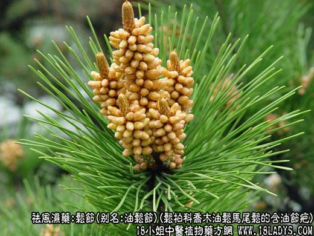
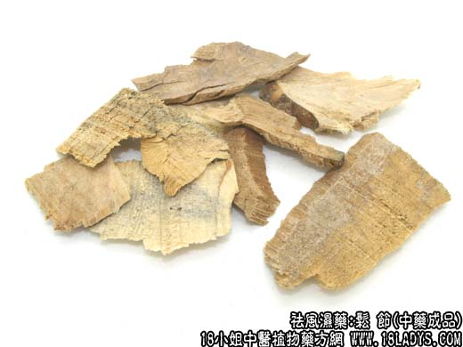

原文出处:本文转载自中药大全网。
原文连接:https://www.daquan.com/post/2162.html
原文连接:https://www.daquan.com/post/2162.html



松节为少常用中药。始载《名医别录》。
别名：油松节。
来源：松柏科植物常绿乔木油松马尾松的含油节疤。
产地 ：全国有松树处皆有产。
性状鉴别：多为圆片状或不规则的块状。两端有刀痕或锯痕，显年轮，黄棕色或红棕色，体重质坚，易燃。燃烧时冒黑烟，并有油渗出。有松节油气，味微辣。以色红油性足者为佳。
主要成分：含树脂、挥发油。
功效与作用：祛风燥湿。其作用可能为镇痛。
炮制：切片生用。
性味：苦温。
归经：入肝、肾经。
功能：祛风燥湿，活血止痛。
主治：风湿性关节疼痛或外伤肿痛。多用于洗药，内服者较少。
临床应用：适用于筋骨、关节风湿痹痛，配入复方或单用浸酒服，方如风湿二方。
与桑枝比较，两者都能祛风湿，但松节祛风湿偏于寒者，桑枝祛风湿偏于热者，各有所长。
用量：9～15g。
处方举例：风湿二方：松节12g，半枫荷30g，鸡骨香12g，豆豉羌9g，当归13g，熟地15g，水煎或浸酒服，治风湿骨痛。
注：江苏、山东、四川、贵州等地用松树树脂干因病变而长出的瘤状物作松节入药。湖南、湖北、河南以茯神木作松节入药。